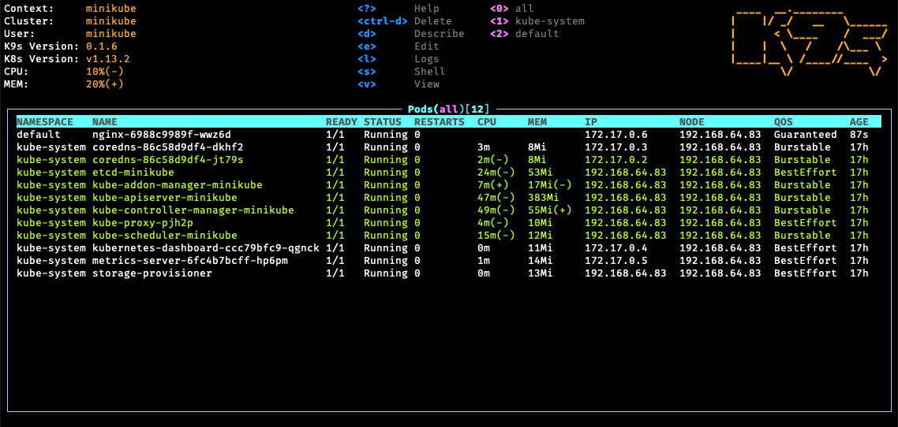
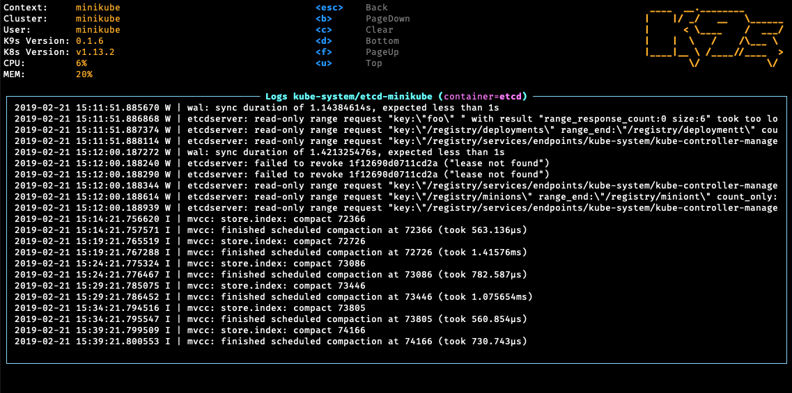
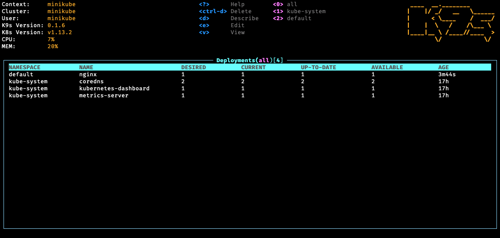

Sezione · Informatica
k9s
k9s è un terminale interattivo per Kubernetes: permette di
esplorare risorse, seguire i log e gestire un cluster senza scrivere
ogni volta kubectl. La guida copre installazione, comandi,
configurazione e uso sicuro del cluster.
v0.51.0
(6 giugno 2026), licenza Apache 2.0. Richiede un
kubeconfig valido e preferisce Kubernetes 1.28 o
successivo. Per i comandi di riferimento resta disponibile la guida
Kubernetes.
Che cos'è k9s
k9s è un'interfaccia a terminale (TUI) per
esplorare, osservare e gestire un cluster Kubernetes.
Scritta in Go e distribuita con licenza Apache 2.0, non sostituisce
kubectl: lo usa per leggere e modificare le risorse e
aggiorna la vista in tempo reale mentre il cluster cambia.
In pratica sostituisce una sequenza di comandi con una tabella navigabile: si sceglie la risorsa, si filtra, si apre il dettaglio e da lì si vedono log, YAML, eventi e azioni disponibili. È comodo soprattutto durante il debug e quando si passa spesso da un namespace o da un contesto all'altro.

Cosa si può fare
- Esplorare risorse standard e Custom Resource Definition con la stessa interfaccia.
- Seguire i log di pod e container, anche precedenti, con timestamp e ricerca.
- Aprire una shell, fare attach o avviare un port-forward.
- Descrivere, modificare, scalare, riavviare ed eliminare risorse.
- Vedere le metriche di pod, container e nodi quando il cluster le espone.
- Filtrare per nome, label, namespace e contesto; usare alias e scorciatoie personalizzate.
- Aprire le viste aggregate Pulses e XRay per guardare più risorse insieme.
- Controllare RBAC, ruoli e binding, con ricerca inversa di ciò che un utente può fare.
- Personalizzare skin, colonne, alias, hotkey e plugin.
k9s o kubectl?
Non è una scelta secca. kubectl resta lo
strumento giusto per script, pipeline e comandi ripetibili; k9s
conviene quando bisogna guardare un cluster,
spostarsi tra risorse e fare debug. Per evitare modifiche
accidentali si può avviare in modalità sola lettura con
k9s --readonly.
Interfaccia
Lo schermo è diviso in tre parti: l'intestazione con contesto, namespace e filtro attivo; la tabella delle risorse con le colonne principali; la barra dei comandi in basso, dove compaiono i tasti disponibili e i messaggi. I breadcrumb mostrano il percorso della vista e Esc risale di un livello.
Versione documentata
Questa guida fa riferimento a k9s v0.51.0, pubblicato
il 6 giugno 2026. k9s richiede un kubeconfig valido e
preferisce Kubernetes 1.28 o successivo; la matrice di
compatibilità completa è nel README del progetto.
Fonti
Requisiti
- Un
kubeconfigvalido e un contesto raggiungibile. - Un terminale a 256 colori; su sistemi Unix conviene impostare
TERM=xterm-256color. EDITORoKUBE_EDITORse si vogliono modificare le risorse dalla UI.- Kubernetes 1.28 o successivo, salvo esigenze particolari.
Windows
k9s è disponibile per Windows e si installa con i gestori di pacchetti più comuni. Da PowerShell:
winget install k9s
scoop install k9s
choco install k9s
Basta uno dei tre comandi. Dopo l'installazione va aperto un nuovo
terminale, così il PATH viene aggiornato.
Linux e macOS
# macOS o Linux con Homebrew
brew install derailed/k9s/k9s
# macOS con MacPorts
sudo port install k9s
# Linux
snap install k9s --devmode
pacman -S k9s
zypper install k9s
pkg install k9s
Su Ubuntu si può usare il pacchetto .deb, mentre
da Fedora 42 in poi k9s è nei repository ufficiali:
# Ubuntu
wget https://github.com/derailed/k9s/releases/latest/download/k9s_linux_amd64.deb
sudo apt install ./k9s_linux_amd64.deb
rm k9s_linux_amd64.deb
# Fedora 42+
sudo dnf install k9sBinari, Go e Docker
In alternativa si scaricano i binari dalla pagina delle release,
oppure si compila da sorgente. k9s può anche girare in un
container, montando il kubeconfig:
# dalla sorgente (versione di sviluppo)
go install github.com/derailed/k9s@latest
# container ufficiale
docker run --rm -it -v ~/.kube/config:/root/.kube/config derailed/k9sPrimo avvio
Dopo l'installazione si controlla la versione e si individuano i
percorsi di configurazione e log con k9s info. Poi si
avvia k9s sul contesto corrente:
k9s version
k9s info
# avvio normale
k9s
# namespace specifico
k9s -n kube-system
# contesto specifico
k9s --context nome-contesto
# sola lettura: comandi di modifica disabilitati
k9s --readonly
# partire direttamente dalla vista dei pod
k9s -c podkubeconfig o nel
contesto attivo. Verifica prima con
kubectl config current-context e
kubectl get pods.
Fonti
Digita per filtrare la cheat sheet e i comandi qui sotto.
La tastiera di k9s
k9s si usa quasi solo da tastiera. Due tasti aprono tutto il resto: : per scegliere una risorsa o un comando, / per filtrare la vista corrente e ? per vedere le scorciatoie disponibili. Esc torna indietro.

Cheat sheet
I comandi che userai il 90% delle volte.
| Tasto o comando | Cosa fa | Note |
|---|---|---|
? | Mostra guida e scorciatoie | Solo ciò che è attivo nella vista corrente. |
Ctrl-a | Elenca gli alias delle risorse | Pod, deployment, servizi e risorse personalizzate. |
:pod | Apre la vista dei pod | Accetta singolare, plurale, short name o alias. |
:pod mio-ns | Apre una risorsa in un namespace | Cambia il namespace della vista. |
/testo | Filtra per nome | Supporta espressioni regolari. |
/-l app=web | Filtra per label | Selettore di label Kubernetes. |
/! testo | Filtro inverso | Tiene ciò che non corrisponde. |
:ctx | Cambia contesto | Mostra l'elenco dei contesti del kubeconfig. |
:ns | Cambia namespace | Mostra l'elenco dei namespace. |
Esc | Torna alla vista precedente | Con i breadcrumb attivi risale di un livello. |
- | Ultimo comando | Funziona come cd -. |
[ / ] | Indietro / avanti nello storico | Come il comando precedente, ma con la cronologia delle viste. |
Azioni sulle risorse
| Tasto | Cosa fa | Note |
|---|---|---|
d | Descrivi | Equivale a kubectl describe. |
y | Vedi YAML | Apre il manifest della risorsa selezionata. |
l | Log | Nei pod e nei container. |
p | Log precedenti | Utile dopo un riavvio del container. |
s | Shell nel container | Solo per i pod; sulle risorse con repliche serve a scalare. |
a | Attach al container | Solo per i pod. |
e | Modifica | Non disponibile in modalità sola lettura. |
Ctrl-d | Elimina | Conferma con Tab e Invio. |
Ctrl-k | Kill immediato | Come kubectl delete --now, senza conferma. |
Shift-f | Port-forward | Pod, servizi e container; f mostra quelli attivi. |
r | Riavvia o drain | Deployment, DaemonSet e StatefulSet; sui nodi esegue il drain. |
u | Cordon / uncordon | Nella vista dei nodi; nei namespace cambia namespace. |
Shift-j | Salta al proprietario | Quando la risorsa ha un owner. |
w | Warp al namespace | Quando è visibile la colonna namespace. |
Ctrl-l | Rollback | Nella vista dei ReplicaSet. |
z | Vedi ReplicaSet | Dalla vista dei Deployment. |
t | Trigger | Nella vista dei CronJob; nei log attiva il timestamp. |
b | Benchmark | Servizi e port-forward. |
Selezione, colonne e viste
| Tasto o comando | Cosa fa | Note |
|---|---|---|
Spazio | Marca una risorsa | Per agire su più risorse insieme. |
Ctrl-Spazio | Marca un intervallo | Selezione multipla consecutiva. |
Ctrl-\ | Azzera le marcature | |
Ctrl-s | Salva su file | Salva le risorse selezionate. |
Ctrl-w | Colonne larghe | Mostra o nasconde le colonne extra. |
Shift-n | Ordina per nome | |
Shift-a | Ordina per età | |
Shift-s | Ordina per stato | |
Shift-p | Ordina per namespace | Solo quando si vedono tutti i namespace. |
Ctrl-r | Aggiorna la vista | Ricarica le risorse. |
:pulses | Apre Pulses | Panoramica dello stato del cluster. |
:xray po | Apre XRay | Relazioni tra risorse; accetta anche dp, svc, rs, sts, ds. |
:q | Esci da k9s | In alternativa Ctrl-c, se abilitato. |
Dalla riga di comando
Le stesse opzioni dell'installazione, raccolte qui per comodità: vengono indicizzate anche dalla ricerca.
k9s
k9s -n kube-system
k9s --context prod
k9s --readonly
k9s -c pod
k9s info
k9s versionFonti
Dove stanno i file
k9s segue lo standard XDG e tiene le configurazioni in una cartella
k9s. Il comando k9s info mostra i percorsi
reali usati sul sistema. La cartella si può cambiare con la
variabile K9S_CONFIG_DIR.
| Sistema | Cartella di configurazione |
|---|---|
| Linux e Unix | ~/.config/k9s |
| macOS | ~/Library/Application Support/k9s |
| Windows | %LOCALAPPDATA%\k9s |
I file principali sono:
config.yaml: preferenze generali e interfaccia.aliases.yaml: scorciatoie per le risorse.hotkeys.yaml: combinazioni di tasti personalizzate.plugins.yaml: comandi aggiuntivi.views.yaml: colonne personalizzate per risorsa.jumps.yaml: salti tra risorse e CRD.skins/: temi di colore.
config.yaml
Le opzioni più utili riguardano frequenza di aggiornamento, timeout, modalità sola lettura e interfaccia. Un esempio minimo:
k9s:
readOnly: false
refreshRate: 2
apiServerTimeout: 120s
maxConnRetry: 15
defaultView: ""
liveViewAutoRefresh: false
noExitOnCtrlC: false
skipLatestRevCheck: false
ui:
skin: dracula
enableMouse: false
headless: false
crumbsless: false
logoless: false
noIcons: false
logger:
tail: 100
buffer: 1000
sinceSeconds: -1
showTime: false
textWrap: false
readOnly disabilita eliminazione, kill e modifica;
refreshRate accetta valori da 2 secondi in su;
apiServerTimeout e maxConnRetry servono
sui cluster lenti. liveViewAutoRefresh abilita
l'aggiornamento periodico delle viste.
Skin e colori
La skin predefinita è indicata in ui.skin
(per esempio dracula) e si può forzare con
K9S_SKIN. I file delle skin stanno in
$XDG_DATA_HOME/k9s/skins; ui.invert
converte una skin scura in chiara, o viceversa, mantenendo le
tonalità.
Alias
Un alias collega un nome breve a una risorsa o a un comando con namespace e label già impostati:
aliases:
pp: v1/pods
crb: rbac.authorization.k8s.io/v1/clusterrolebindings
web: pod default app=web
Con questo file :pp, :crb e
:web aprono direttamente le viste corrispondenti.
Hotkey
Le hotkey aprono una vista con una combinazione di tasti. Si possono definire a livello globale o per singolo contesto:
hotKeys:
shift-0:
shortCut: Shift-0
description: Pod
command: pods
shift-1:
shortCut: Shift-1
description: Deployment
command: dpLe hotkey personalizzate compaiono nella guida ? e il file viene ricaricato automaticamente.
Colonne personalizzate
views.yaml cambia le colonne mostrate per una risorsa.
Si possono estrarre valori dal manifest e aggiungere attributi di
allineamento o visibilità:
views:
v1/pods:
columns:
- NAME
- NAMESPACE|WR
- STATUS
- AGE
- IP
- NODE
Gli attributi principali sono T (tempo),
N (numero), W (solo in modalità
larga), S (forza visibile), H (nascondi),
L e R (allineamento). Dalla
v0.40.0 si possono usare espressioni per estrarre campi
JSON; si possono avere viste diverse per namespace o alias.
Plugin
Un plugin aggiunge un comando alla UI. Riceve variabili come
$NAME, $NAMESPACE, $CONTEXT
e $CLUSTER:
plugins:
pod-yaml:
shortCut: Ctrl-Y
description: YAML del pod
scopes:
- po
command: kubectl
background: false
args:
- get
- $NAME
- -n
- $NAMESPACE
- -o
- yaml
I plugin possono chiedere input, girare in background e usare
dangerous: true per essere disabilitati in sola
lettura. Gli ambienti disponibili includono anche
$POD, $CONTAINER, $FILTER e
$COL-NOME.
Configurazione per contesto
Ogni cluster e contesto può avere preferenze proprie in
$XDG_DATA_HOME/k9s/clusters/clusterX/contextY/:
namespace preferiti, vista iniziale e feature gate.
k9s:
cluster: cluster-1
readOnly: false
namespace:
active: default
lockFavorites: false
favorites:
- kube-system
- default
view:
active: po
featureGates:
nodeShell: trueVariabili d'ambiente
K9S_CONFIG_DIR: cartella delle configurazioni.K9S_SKIN: skin da usare.K9S_LOGS_DIR: cartella dei log.K9S_DEFAULT_PF_ADDRESS: indirizzo locale dei port-forward.K9S_FEATURE_GATE_NODE_SHELL: abilita la shell sui nodi.K9S_CLIPBOARD:auto,nativeoosc52.K9S_OSC52_MAX: dimensione massima dei dati copiati via OSC52.
Fonti
Sola lettura e cluster condivisi
Su un cluster di produzione o condiviso conviene partire in
modalità sola lettura:
k9s --readonly oppure readOnly: true in
config.yaml. In questa modalità sono disabilitati
eliminazione, kill e modifica; anche i plugin marcati
dangerous restano spenti.
RBAC e permessi
k9s usa le credenziali del kubeconfig: vede e fa
esattamente ciò che l'utente o il ServiceAccount può fare.
Con le viste RBAC si controllano ruoli, ClusterRole e binding; la
ricerca inversa mostra cosa può fare un utente, un gruppo o un
ServiceAccount. Se un'azione manca o restituisce
forbidden, il problema è nei permessi, non in k9s.
kubectl auth can-i delete pods -n default
kubectl auth whoamiShell sui nodi
Con il feature gate nodeShell attivo compare
s anche nella vista dei nodi: k9s crea un pod sul nodo
scelto e apre una shell. L'immagine e i limiti si personalizzano in
shellPod:
k9s:
shellPod:
image: busybox:1.36
namespace: default
limits:
cpu: 100m
memory: 100Mi
tty: truehostPathVolume). Va abilitata solo se serve e con le
dovute cautele.
Port-forward e FastForwards
Shift-f apre il dialogo del port-forward; f mostra quelli attivi. Con le annotazioni si possono pre-selezionare o avviare automaticamente le porte giuste:
metadata:
annotations:
k9scli.io/auto-port-forwards: zorg::5556
k9scli.io/port-forwards: bozo::9090:p1
Il formato è container::[porta-locale:]porta-container.
Per disabilitare il port-forward su websocket:
KUBECTL_PORT_FORWARD_WEBSOCKETS=false.
Log, dump e debug
k9s info indica dove finiscono log, dump dello schermo
e benchmark. Per un problema di avvio si può lanciare k9s in
debug e leggere il log:
k9s info
k9s -l debug
k9s --logFile /tmp/k9s.log
tail -f /tmp/k9s.log
Su Windows il percorso del log compare in k9s info.
K9S_LOGS_DIR cambia la cartella dei log.
Prestazioni su cluster grandi
Con molti namespace e risorse conviene alzare
apiServerTimeout e maxConnRetry, e
lasciare refreshRate almeno a 2 secondi. La
v0.51.0 ha migliorato il throughput delle chiamate e la
paginazione delle metriche; liveViewAutoRefresh resta
disattivato per impostazione predefinita.
Pulses, XRay, Popeye
:pulses dà una panoramica dello stato del
cluster, :xray mostra le relazioni tra risorse e
:popeye integra il cluster sanitizer Popeye. Sono viste
di lettura: aiutano a capire dove guardare prima di intervenire.

Problemi comuni
| Sintomo | Causa probabile | Rimedio |
|---|---|---|
| Colori strani o caratteri illeggibili | Il terminale non è a 256 colori. | Imposta TERM=xterm-256color e riapri il terminale. |
| Nessuna risorsa o connessione fallita | kubeconfig assente o contesto sbagliato. | Controlla kubectl config current-context e kubectl get pods. |
| Errore forbidden | RBAC insufficiente per l'utente. | Verifica con kubectl auth can-i e correggi i ruoli. |
| e non apre l'editor | EDITOR e KUBE_EDITOR non impostati. | Esporta KUBE_EDITOR con l'editor preferito. |
| Metriche assenti | metrics-server non installato o non raggiungibile. | Installa metrics-server e verifica con kubectl top pods. |
| Comandi di modifica disabilitati | Modalità sola lettura attiva. | Rimuovi --readonly o readOnly: true. |
| Copia negli appunti non funziona | Nessuna utility di clipboard o terminale senza OSC52. | Imposta K9S_CLIPBOARD su native o osc52. |
Sicurezza
- Il
kubeconfigcontiene credenziali: non condividerlo e non committarlo. - Usa il principio del minimo privilegio e, quando possibile, la sola lettura.
- I plugin eseguono comandi arbitrari: installa solo quelli che capisci.
- La shell sui nodi è potente: abilitala solo su cluster controllati.